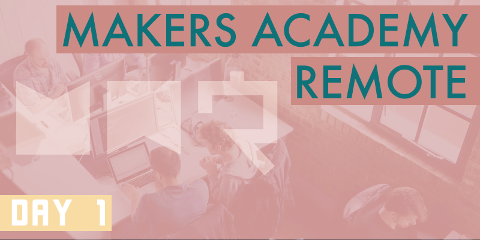

Day one is complete! As expected today has been concerned mostly with introductions and preparing us for what to expect from the coming twelve weeks.
Meet the cohort
We began the day with a Zoom video meeting that brought our entire cohort together with our coach, Sam. We learned that our cohort, at 24 strong, is the largest remote cohort that Makers Academy has ever run. Initially Sam gave an introductory talk, then we were quickly split into ‘break-out’ sessions of two or three people each. We were told to learn a bit about our partners, before working together on some CodeWars katas of our choosing. I was paired with a couple of guys who I hadn’t met during the pre-course. It was great to meet them and learn about their backgrounds, before attempting some three-person pair coding. The standard pair coding technique of having one driver and one navigator didn’t quite fit when working as a group of three, but we managed well with one driver and two navigators.
Soon we were back in the group meeting for a lengthy session in which rather than introducing ourselves we introduced the others from our break-out sessions to the rest of the cohort, a Makers Academy tradition. It was good to learn about everybody, and it helped the screen full of digital names and faces to begin to feel like real people.
Housekeeping
Following this was a lecture from Sam about how we’re expected to behave during the course. There was a long list of points to consider, but honestly if anybody actually learned anything during this part I’d be concerned, because it should all be covered by common sense and decency.
After this came a nice long lunch break, followed by a short talk from Sam in which he posed questions about what it means to be a knowledge worker. We were then split into further two to three person break-out sessions to search for answers to those questions, before returning to the group to discuss our findings. During the discussion Sam made it clear that this task was as much about learning to research in a pair as it was to do with actually learning about knowledge workers, and in that respect it was valuable practice.
Break-out
We were then again split into two and three person break-out sessions in which we were instructed to tell one another about occasions when we’ve faced a particular problem, and what we did to resolve it. Then once again we came back to the group to discuss our examples. After this came another talk from Sam about how to escalate problems that we might face throughout the course. We were told of a ten-step escalation process in which we first need to evaluate our problem, and then begin to ask for help in a clear and considered way, first from the other students around us, then gradually escalating the problem to further sources of assistance until finally the most difficult of problems can be brought to the attention of a Makers Academy coach. This approach might make the coaches appear a bit unhelpful, but by taking all of our problems directly to a coach for an answer we wouldn’t be learning the very real problem solving kills required of a junior developer. Even senior developers spend a large amount of time researching solutions, so teaching us to do that effectively is a big part of what the course is about.
Craftspeople
During a further talk from Sam we were told about what it means to be a software ‘craftsperson’, as opposed to a ‘hacker’. Essentially craftspeople take pride in their work, and aim to produce simple, clean solutions that are tidy and easy to maintain. Hackers by comparison might be content simply sticking together code examples that they’ve found on Google, while not concerning themselves too much with how the code works. This is a gross simplification, but I’m sure you’ve guessed from my description that Makers Academy want us all to become craftspeople. This led to a similar talk about the concepts of Extreme Programming, a software craftsperson methodology that I haven’t had the time to look into properly yet, but one that Makers Academy bases much of its curriculum and ethos on. We were also given a book suggestion in Apprenticeship Patterns: guidance for the aspiring software craftsman by David H Hoover and Adewale Oshineye, before a final question and answer session was held with Sam. There were a lot of questions regarding the structure of the course, the hours that we can expect to work throughout the week and at weekends, etc. While Sam answered the questions about schedule as best he could, I suspect that every day is really quite different, and I can’t wait to find out properly when the course properly begins tomorrow.